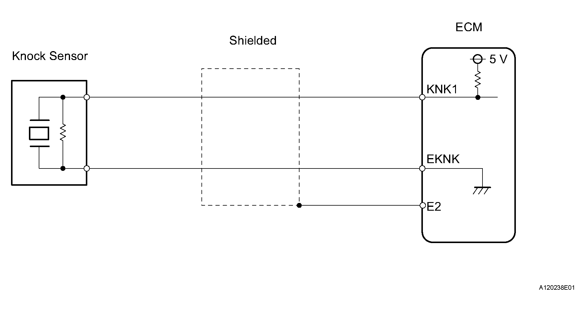

Home
>>
Scion
>>
2006
>>
xB Standard
>>
Repair and Diagnosis (Single Page)
>>
Engine Performance
>>
Engine Control Systems
>>
Engine Control System (1NZ-FE)
>>
Parts Location
>>
DTC P0327 Knock Sensor 1 Circuit Low Input (Bank 1 or Single Sensor); DTC P0328 Knock Sensor 1 Circuit High Input (Bank 1 or Single Sensor)
>>
Wiring Diagram
DTC P0327 Knock Sensor 1 Circuit Low Input (Bank 1 or Single Sensor); DTC P0328 Knock Sensor 1 Circuit High Input (Bank 1 or Single Sensor): Wiring Diagram
Fig 1: Knock Sensor 1 Circuit Wiring Diagram

Courtesy of © TOYOTA, LICENSE AGREEMENT TMS1002